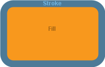

Class Drawable
- All Implemented Interfaces:
java.lang.AutoCloseable
- Direct Known Subclasses:
CubicCurve,Drawable2D,Image,Line,Path,QuadCurve,Text
public abstract class Drawable
extends java.lang.Object
implements java.lang.AutoCloseable
The superclass of all drawable components
This class defines most of the core operations that define what it means to be drawable (that the component is associated with a drawing panel, has a stroke and/or fill color, perhaps a particular stroke style).
- Author:
- Seth Battis
-
Field Summary
Fields Modifier and Type Field Description static java.awt.StrokeNO_STROKEA zero-width stroke constant, to hide the stroke (no matter the stroke color)static java.awt.ColorTRANSPARENTA transparent color constant, to hide either stroke or fill -
Constructor Summary
Constructors Constructor Description Drawable() -
Method Summary
Modifier and Type Method Description voidclose()Perform necessary cleanup before garbage collectionbooleancontains(double x, double y)Tests if the specified coordinates are inside the boundary of the underlyingShapebooleancontains(double x, double y, double width, double height)Tests if the interior of the underlyingShapeentirely contains the interior of the specified rectanglebooleancontains(java.awt.geom.Point2D point)Tests if the specified point is inside the boundary of the underlyingShapebooleancontains(java.awt.geom.Rectangle2D rectangle)Test if the interior of the underlyingShapeentirely contains the interior of the specified rectanglevoiddraw(java.awt.Graphics2D graphics)Drawing instructions for this componentjava.awt.geom.Rectangle2DgetBounds()Enclosing bounding box of the underlyingShapeDrawingPanelgetDrawingPanel()Drawing panel on which component is drawnjava.awt.ColorgetFillColor()Current fill colordoublegetHeight()Height of bounding boxjava.awt.geom.Point2DgetLocation()Origin of bounding boxjava.awt.geom.PathIteratorgetPathIterator(java.awt.geom.AffineTransform transformation)Provides access to the underlying geometry of theShapeoutlinejava.awt.ShapegetShape()UnderlyingShapegeometryjava.awt.StrokegetStroke()Current stroke stylejava.awt.ColorgetStrokeColor()Current stroke colordoublegetWidth()Width of bounding boxdoublegetX()X-coordinate of bounding box origindoublegetY()Y-coordinate of bounding box originbooleanintersects(double x, double y, double width, double height)Tests if the interior of the specified rectangle intersects the interior of the underlyingShapebooleanintersects(java.awt.geom.Rectangle2D rectangle)Tests if the interior of the specified rectangle intersects the interior of the underlyingShapevoidremoveFromDrawingPanel()Remove this component from its associated drawing panelvoidsetDrawingPanel(DrawingPanel drawingPanel)Change the drawing panel on which this component is drawnvoidsetFillColor(java.awt.Color color)Adjust fill colorabstract voidsetHeight(double height)Adjust height of bounding boxabstract voidsetLocation(double x, double y)Translate the shape to a locationvoidsetShape(java.awt.Shape shape)Replace the underlyingShapegeometry of the drawable componentvoidsetStroke(java.awt.Stroke stroke)Change theStrokevoidsetStrokeColor(java.awt.Color color)Adjust stroke colorabstract voidsetWidth(double width)Adjust width of bounding boxvoidsetX(double x)Adjust the current X-coordinate of bounding box originvoidsetY(double y)Adjust Y-coordinate of origin of bounding boxabstract voidtranslate(double dx, double dy)Translate the shape locationMethods inherited from class java.lang.Object
clone, equals, finalize, getClass, hashCode, notify, notifyAll, toString, wait, wait, wait
-
Field Details
-
TRANSPARENT
public static final java.awt.Color TRANSPARENTA transparent color constant, to hide either stroke or fill -
NO_STROKE
public static final java.awt.Stroke NO_STROKEA zero-width stroke constant, to hide the stroke (no matter the stroke color)
-
-
Constructor Details
-
Drawable
public Drawable()
-
-
Method Details
-
getDrawingPanel
Drawing panel on which component is drawn- Returns:
- Drawing panel on which this component is drawn (may be
null)
-
setDrawingPanel
Change the drawing panel on which this component is drawn
This method may also be used as a "hack" adjust the order in which drawing components are stacked. Drawable components are drawn on the screen in the order in which they are declared, oldest to newest, with the newest in front of the older components. (Re)setting the drawing panel of a component will pull it forward, in front of newer components, as though it had just been declared.
- Parameters:
drawingPanel- on which to draw
-
removeFromDrawingPanel
public void removeFromDrawingPanel()Remove this component from its associated drawing panel
The component will no longer be drawn, but other references to the component will still be valid, and the component may be added to a drawing panel later to be redrawn
-
getShape
public java.awt.Shape getShape()UnderlyingShapegeometry- Returns:
- Underlying
Shapegeometry
-
setShape
Replace the underlyingShapegeometry of the drawable component- Parameters:
shape- of geometry- Throws:
DrawableException- will be thrown ifshapeis not compatible with the component (e.g trying to redefine anArcas aLine)
-
getLocation
public java.awt.geom.Point2D getLocation()Origin of bounding box- Returns:
- Coordinates of bounding box origin
-
getX
public double getX()X-coordinate of bounding box origin- Returns:
- X-coordinate of the origin of the enclosing bounding box of the underlying
Shape - See Also:
Shape.getBounds2D(),Rectangle.getX()
-
setX
public void setX(double x)Adjust the current X-coordinate of bounding box origin- Parameters:
x- coordinate to use
-
getY
public double getY()Y-coordinate of bounding box origin- Returns:
- Y-coordinate of the origin of the enclosing bounding box of the underlying
Shape - See Also:
Shape.getBounds2D(),Rectangle.getY()
-
setY
public void setY(double y)Adjust Y-coordinate of origin of bounding box- Parameters:
y- coordinate
-
getWidth
public double getWidth()Width of bounding box- Returns:
- Width of the enclosing bounding box of the underlying
Shape - See Also:
Shape.getBounds2D(),Rectangle.getWidth()
-
setWidth
public abstract void setWidth(double width)Adjust width of bounding box
- Parameters:
width- to use
-
getHeight
public double getHeight()Height of bounding box- Returns:
- Height of the enclosing bounding box of the underlying
Shape - See Also:
Shape.getBounds2D(),Rectangle.getHeight()
-
setHeight
public abstract void setHeight(double height)Adjust height of bounding box- Parameters:
height- to use
-
translate
public abstract void translate(double dx, double dy)Translate the shape location
- Parameters:
dx- Change in X-coordinatesdy- Change in Y-coordinates
-
setLocation
public abstract void setLocation(double x, double y)Translate the shape to a location
- Parameters:
x- coordinate of shape origin at new locationy- coordinate of shape origin at new location
-
getStroke
public java.awt.Stroke getStroke()Current stroke style- Returns:
- Current
Stroke
-
setStroke
public void setStroke(java.awt.Stroke stroke)Change the
StrokeRefer to
BasicStrokedocumentation for information on how to define a new stroke/- Parameters:
stroke- description
-
getStrokeColor
public java.awt.Color getStrokeColor()Current stroke color- Returns:
- Current stroke color
-
setStrokeColor
public void setStrokeColor(java.awt.Color color)Adjust stroke color

- Parameters:
color- of stroke
-
getFillColor
public java.awt.Color getFillColor()Current fill color- Returns:
- Current fill color
-
setFillColor
public void setFillColor(java.awt.Color color)Adjust fill color
- Parameters:
color- of fill
-
draw
public void draw(java.awt.Graphics2D graphics)Drawing instructions for this component
Required by
DrawingPanel.draw(Graphics2D)to render the drawable component.- Parameters:
graphics- context for drawing instructions
-
getBounds
public java.awt.geom.Rectangle2D getBounds()Enclosing bounding box of the underlyingShape- Returns:
- Enclosing bounding box of the underlying
Shape - See Also:
Shape.getBounds2D()
-
contains
public boolean contains(double x, double y)Tests if the specified coordinates are inside the boundary of the underlyingShape- Parameters:
x- coordinate of pointy- coordinate of point- Returns:
trueif the coordinates are inside the boundary of the shape,falseotherwise- See Also:
Shape.contains(double, double)
-
contains
public boolean contains(java.awt.geom.Point2D point)Tests if the specified point is inside the boundary of the underlyingShape- Parameters:
point- to test- Returns:
trueif the point is inside the boundary of the shape,falseotherwise- See Also:
Shape.contains(Point2D)
-
intersects
public boolean intersects(double x, double y, double width, double height)Tests if the interior of the specified rectangle intersects the interior of the underlyingShape- Parameters:
x- coordinate of top, left corner of the rectangley- coordinate of top, left corner of the rectanglewidth- of the rectangleheight- of the rectangle- Returns:
trueif the interior of the rectangle and the shape intersect,falseotherwise- See Also:
Shape.intersects(double, double, double, double)
-
intersects
public boolean intersects(java.awt.geom.Rectangle2D rectangle)Tests if the interior of the specified rectangle intersects the interior of the underlyingShape- Parameters:
rectangle- to test- Returns:
trueif the interior of the rectangle and the shape intersect,falseotherwise- See Also:
Shape.intersects(Rectangle2D)
-
contains
public boolean contains(double x, double y, double width, double height)Tests if the interior of the underlyingShapeentirely contains the interior of the specified rectangle- Parameters:
x- coordinate of top, left corner of the rectangley- coordinate of the top, left corner of the rectanglewidth- of the rectangleheight- of the rectangle- Returns:
trueif the shape contains the rectangle,falseotherwise- See Also:
Shape.contains(double, double, double, double)
-
contains
public boolean contains(java.awt.geom.Rectangle2D rectangle)Test if the interior of the underlyingShapeentirely contains the interior of the specified rectangle- Parameters:
rectangle- to test- Returns:
trueif the shape contains the rectangle,falseotherwise- See Also:
Shape.contains(Rectangle2D)
-
getPathIterator
public java.awt.geom.PathIterator getPathIterator(java.awt.geom.AffineTransform transformation)Provides access to the underlying geometry of the
ShapeoutlineIf a
transformationis provided, point coordinates are suitable transformed before being returned.- Parameters:
transformation- to apply to shape before iterating- Returns:
- iterator over shape outline coordinates
- See Also:
Shape.getPathIterator(AffineTransform)
-
close
public void close()Perform necessary cleanup before garbage collection- Specified by:
closein interfacejava.lang.AutoCloseable
-